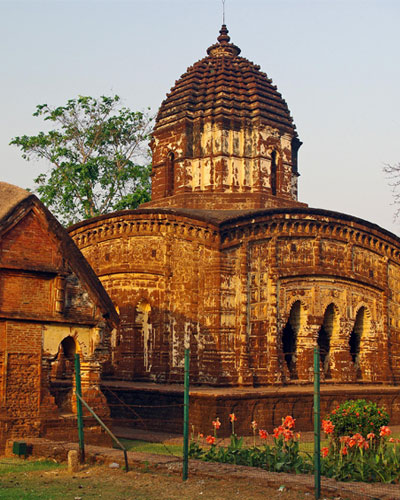

About Us
History of Bishnupur
Malla Dynasty:
The Malla kings were instrumental in the development of Bishnupur as a cultural hub. They patronized various forms of art, particularly the distinctive terracotta temples that still stand today, showcasing intricate carvings and sculptures.
Architecture:
The most famous temples, like the Rasmancha and the Jorbangla Temple, exemplify the unique brick-and-terra-cotta style of architecture. These structures often depict scenes from Hindu mythology and the life of Lord Krishna.